Crab SED v6 64748 · 2022 年 1 月复现报告
Scheme R · Double-Rayleigh PSF · Analytic B_on · 连续 6° 全域非负二次背景约束
Executive Check · 执行与验收
| Gate | Status | Evidence |
|---|---|---|
| 数据完整性 | PASS | 681 分片校验及全量独立重数已通过 |
| 44-cell 数值与背景门槛 | PASS | 正积分；连续 6° 圆盘非负（数值容差内） |
| 不确定度校准 | FAIL | 6/8 个真值/计数场景未通过 |
| 谱拟合收敛 | PASS | 两误差 × 两模型 Minuit valid |
| 谱拟合优度 | FAIL | LogPar 渐近 p=0.0002178 < 0.01 |
| 科学结论 | DIAGNOSTIC ONLY | 仅交付诊断谱与 SED；非原算法严格复现 |
Slurm Jobs · 实际作业
下表来自已完成交付收据；66091 是首次 smoke 的路径解析失败，修复后重跑成功。退出成功表示对应计算完成，科学门槛单独判断。
| Job | Stage | State | Exit | Elapsed | CPU | Memory |
|---|---|---|---|---|---|---|
| 66091 | v6_nn6_smoke | FAILED | 1:0 | 00:00:03 | 16 | 24G |
| 66092 | v6_nn6_smoke | COMPLETED | 0:0 | 00:00:11 | 16 | 24G |
| 66093 | v6_nn6_de | COMPLETED | 0:0 | 00:00:03 | 16 | 24G |
| 66094 | v6_nn6_toys | COMPLETED | 0:0 | 00:32:40 | 16 | 24G |
| 66095 | v6_nn6_spectra | COMPLETED | 0:0 | 00:00:02 | 16 | 24G |
| 66096 | v6_nn6_spectral_toys | COMPLETED | 0:0 | 00:00:56 | 16 | 24G |
| 66097 | v6_nn6_report | COMPLETED | 0:0 | 00:00:09 | 4 | 8G |
| 66098 | v6_nn6_verify | COMPLETED | 0:0 | 00:00:05 | 4 | 8G |
| 66099 | v6_nn6_report | COMPLETED | 0:0 | 00:00:09 | 4 | 8G |
| 66100 | v6_nn6_verify | COMPLETED | 0:0 | 00:00:05 | 4 | 8G |
本页图表生成作业：66107。只读取既有结果并制图，最终退出状态见随附 report_completion.json。
Inputs And Outputs · 输入与输出
本次 run：v6_64748_202201_scheme_R_double_rayleigh_analytic_bon_nonnegative6。数据与统计量均取一月独立约束运行；源运行收据保持原始哈希。
Selector Rule · 固定 44-cell
沿用原 MC ridge 与显式 override 后的固定选择。首个 Nhit bin 为 [100,200)，≥6 的 predE 尾部仅诊断；75 保留、90 排除。没有按一月谱形或显著性重新选 cell。
1, 2, 3, 4, 5, 6, 15, 16, 17, 18, 19, 20, 21, 28, 29, 30, 31, 32, 33, 34, 42, 43, 44, 45, 46, 47, 48, 56, 57, 58, 59, 60, 61, 62, 70, 71, 72, 73, 74, 75, 86, 87, 88, 89
查看全部 44-cell 选择来源
| Cell | Nhit | predE | Reason | Override |
|---|---|---|---|---|
| 1 | [100,200) | [2,2.5) | original MC-ridge fit cell preserved | |
| 2 | [100,200) | [2.5,3) | original MC-ridge fit cell preserved | |
| 3 | [100,200) | [3,3.25) | original MC-ridge fit cell preserved | |
| 4 | [100,200) | [3.25,3.5) | one-bin high-predE extension passed MC statistics and Stage B PSF quality | |
| 5 | [100,200) | [3.5,3.75) | explicit reselect inclusion on top of the prior v6 fit selector | force_include |
| 6 | [100,200) | [3.75,4.0) | explicit reselect inclusion on top of the prior v6 fit selector | force_include |
| 15 | [200,300) | [2.5,3) | original MC-ridge fit cell preserved | |
| 16 | [200,300) | [3,3.25) | original MC-ridge fit cell preserved | |
| 17 | [200,300) | [3.25,3.5) | original MC-ridge fit cell preserved | |
| 18 | [200,300) | [3.5,3.75) | original MC-ridge fit cell preserved | |
| 19 | [200,300) | [3.75,4.0) | one-bin high-predE extension passed MC statistics and Stage B PSF quality | |
| 20 | [200,300) | [4.0,4.25) | explicit reselect inclusion on top of the prior v6 fit selector | force_include |
| 21 | [200,300) | [4.25,4.5) | explicit reselect inclusion on top of the prior v6 fit selector | force_include |
| 28 | [300,500) | [2.5,3) | original MC-ridge fit cell preserved | |
| 29 | [300,500) | [3,3.25) | original MC-ridge fit cell preserved | |
| 30 | [300,500) | [3.25,3.5) | original MC-ridge fit cell preserved | |
| 31 | [300,500) | [3.5,3.75) | original MC-ridge fit cell preserved | |
| 32 | [300,500) | [3.75,4.0) | original MC-ridge fit cell preserved | |
| 33 | [300,500) | [4.0,4.25) | original MC-ridge fit cell preserved | |
| 34 | [300,500) | [4.25,4.5) | explicit reselect inclusion on top of the prior v6 fit selector | force_include |
| 42 | [500,800) | [3,3.25) | original MC-ridge fit cell preserved | |
| 43 | [500,800) | [3.25,3.5) | original MC-ridge fit cell preserved | |
| 44 | [500,800) | [3.5,3.75) | original MC-ridge fit cell preserved | |
| 45 | [500,800) | [3.75,4.0) | original MC-ridge fit cell preserved | |
| 46 | [500,800) | [4.0,4.25) | original MC-ridge fit cell preserved | |
| 47 | [500,800) | [4.25,4.5) | explicit reselect inclusion on top of the prior v6 fit selector | force_include |
| 48 | [500,800) | [4.5,4.75) | explicit reselect inclusion on top of the prior v6 fit selector | force_include |
| 56 | [800,1100) | [3.25,3.5) | original MC-ridge fit cell preserved | |
| 57 | [800,1100) | [3.5,3.75) | original MC-ridge fit cell preserved | |
| 58 | [800,1100) | [3.75,4.0) | original MC-ridge fit cell preserved | |
| 59 | [800,1100) | [4.0,4.25) | original MC-ridge fit cell preserved | |
| 60 | [800,1100) | [4.25,4.5) | original MC-ridge fit cell preserved | |
| 61 | [800,1100) | [4.5,4.75) | explicit reselect inclusion on top of the prior v6 fit selector | force_include |
| 62 | [800,1100) | [4.75,5.0) | explicit reselect inclusion on top of the prior v6 fit selector | force_include |
| 70 | [1100,2000) | [3.5,3.75) | original MC-ridge fit cell preserved | |
| 71 | [1100,2000) | [3.75,4.0) | original MC-ridge fit cell preserved | |
| 72 | [1100,2000) | [4.0,4.25) | original MC-ridge fit cell preserved | |
| 73 | [1100,2000) | [4.25,4.5) | original MC-ridge fit cell preserved | |
| 74 | [1100,2000) | [4.5,4.75) | original MC-ridge fit cell preserved | |
| 75 | [1100,2000) | [4.75,5.0) | explicit reselect inclusion on top of the prior v6 fit selector | force_include |
| 86 | [2000,3000) | [4.25,4.5) | original MC-ridge fit cell preserved | |
| 87 | [2000,3000) | [4.5,4.75) | original MC-ridge fit cell preserved | |
| 88 | [2000,3000) | [4.75,5.0) | original MC-ridge fit cell preserved | |
| 89 | [2000,3000) | [5,5.5) | original MC-ridge fit cell preserved |
Analytic B_on Contract · 连续非负背景
q(x,y)=c₀+c₁x+c₂y+c₃x²+c₄xy+c₅y²；x/y 单位 degree，q 为 counts / 0.1° pixel。保持原 weighted-LS 目标 Σ(z−q)²/max(z,1)，增加连续 x²+y²≤36 上 q≥0 的约束，允许接触零。
环区归一化 scale=Σz/Σmax(q_pixel,0)；解析孔径积分 B_on=scale/h² × [πr²c₀+πr⁴(c₃+c₅)/4]，h=0.1°。N_on 仍逐事件按球面距离计数。
连续极小值由内部与圆周解析驻点候选求得，网格图不作为非负证明。容差 10⁻¹⁰×环区均值；SLSQP ftol=10⁻¹²。没有正偏置 epsilon，也没有用事后裁零替代曲面约束。
Reproduction Comparison · 基线与一月结果
本节对应原报告的分支对照。两种一月误差口径共享同一背景与 44-cell；历史多月基线观测时间不同，不是单因素统计对照，不用 χ² 大小推断改善程度。
| Branch | φ₀ @ 3 TeV | α | β | χ²/dof | Meaning |
|---|---|---|---|---|---|
| 旧 v6 多月基线（历史参考） | 2.426542e-12 | 2.761285 | 0.120183 | 452.57/41 | 旧数据；不作为验收目标 |
| 一月原无约束版 | — | — | — | 未拟合 | cell 62 背景门槛失败 |
| 一月非负约束 / legacy | 2.182967e-12 | 2.733574 | 0.122305 | 74.68/41 | 诊断结果 |
| 一月非负约束 / propagated | 2.209892e-12 | 2.742995 | 0.134170 | 80.61/41 | 诊断结果 |
Cell 62 Diagnostic · 约束改变的 cell
| Cell | N_on | N_ann | Old B_on | New B_on | min q on 6° | Tolerance | Bootstrap SD |
|---|---|---|---|---|---|---|---|
| 48 | 24 | 119 | 20.060734 | 19.794517 | -5.546181e-15 | 2.106941e-12 | 3.831411 |
| 62 | 3 | 10 | -0.878926 | 0.229889 | -1.387730e-15 | 1.770538e-13 | 0.587421 |
| 70 | 7 | 303 | 1.431995 | 1.335271 | -3.427470e-14 | 8.058511e-12 | 0.173545 |
约束改变 cell 48、62、70；其余 41 个保持旧可行最优解。Cell 62 的正 B_on 修复了数值可行性，但其 bootstrap SD 大于估计本身，不能据此认证背景准确性。
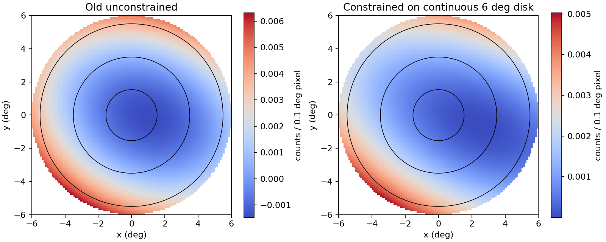
Large-Pull Diagnostics · 最大残差
以下按传播误差版 |pull| 排序，两列仅比较误差口径；没有删掉大 pull 或负 excess cell。
| Cell | Excess | σ legacy | σ propagated | Pull legacy | Pull propagated |
|---|---|---|---|---|---|
| 70 | 5.664729 | 2.887087 | 2.651437 | -2.598386 | -2.849679 |
| 28 | 258.357375 | 35.603969 | 30.610204 | -2.335542 | -2.718503 |
| 16 | 667.080040 | 64.829931 | 53.905272 | 2.255869 | 2.641915 |
| 74 | 12.163409 | 3.979521 | 3.754684 | 2.169738 | 2.354475 |
| 71 | 35.640984 | 7.096409 | 6.575456 | -2.176929 | -2.323036 |
| 60 | 12.539932 | 4.632501 | 4.147842 | 2.037870 | 2.298084 |
| 5 | -197.874764 | 91.257190 | 128.308856 | -3.049794 | -2.172539 |
| 29 | 791.976492 | 49.295269 | 42.013956 | 1.843219 | 2.010553 |
| 4 | -52.721010 | 96.988252 | 96.815271 | -1.985480 | -1.999408 |
| 73 | 31.347153 | 6.830289 | 6.262440 | 1.660892 | 1.926921 |
| 17 | 237.799316 | 47.140224 | 41.836866 | 1.565546 | 1.726590 |
| 30 | 539.931661 | 40.988637 | 35.015025 | 1.572090 | 1.678834 |

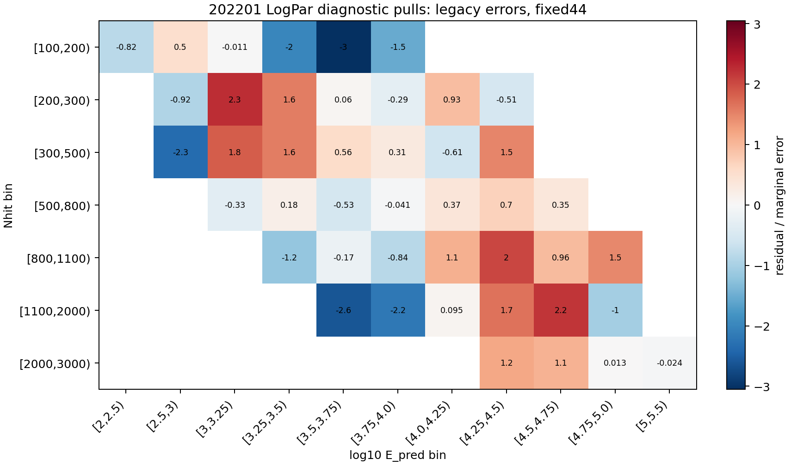

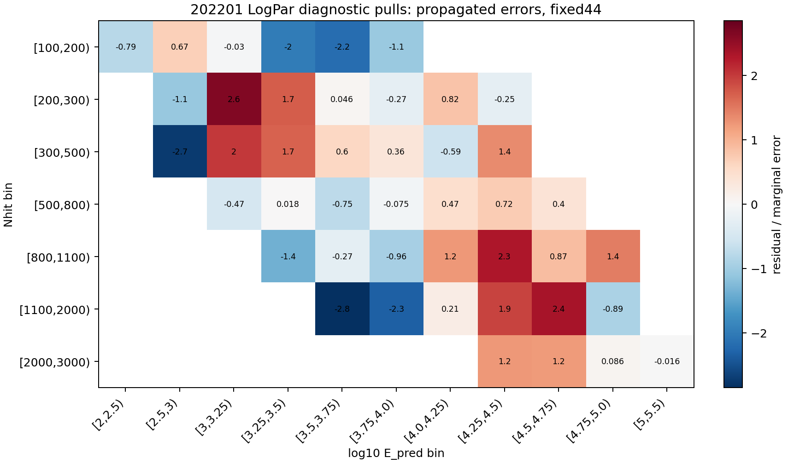
Stage C Time Audit · 时间与曝光
| Quantity | Value |
|---|---|
| 预测文件 | 681 |
| 输入预测事件 | 48,726,074 |
| Stage C 事件 | 21,559,258 |
| 完整原始时间行 | 69,279,369 |
| 保留异常时间 | 464 |
| GTI 段数 | 756 |
| GTI live days | 26.553360 |
| Crab source days | 9.392539 |
| UTC start | 2021-12-31T16:00:20.830030+00:00 |
| UTC stop | 2022-01-31T15:59:31.734623+00:00 |
202201 是北京时间文件标签；逐文件按 >60 s 间隙断开并合并重叠 GTI，源轨迹使用原 v6 的 60 s 中点积分。活时与源可见曝光不同；没有独立硬件 deadtime 记录。全部预测/time friend 已验收；本轮没有重新推理或时间对齐。
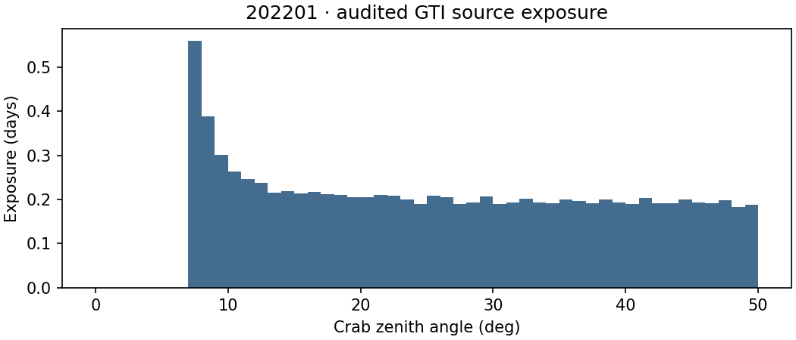
Stage A–B Diagnostics · 响应与 PSF
以下五图复用指定原报告的 MC/PSF 图，逐文件哈希见 report_validation.json；一月兼容性审计验证全部 91 个 r_opt 与历史数组一致。图中历史 run 标签保留，避免冒充本次新生成 MC。

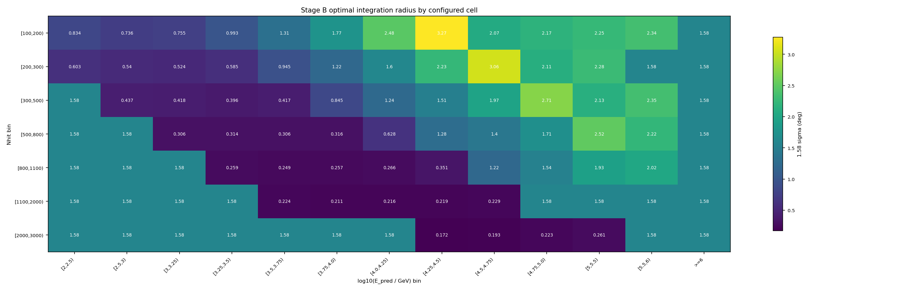

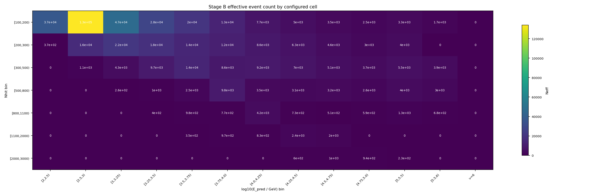

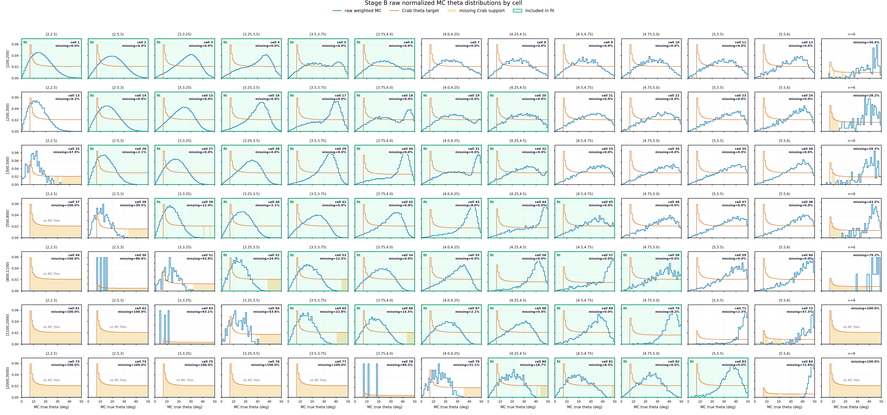

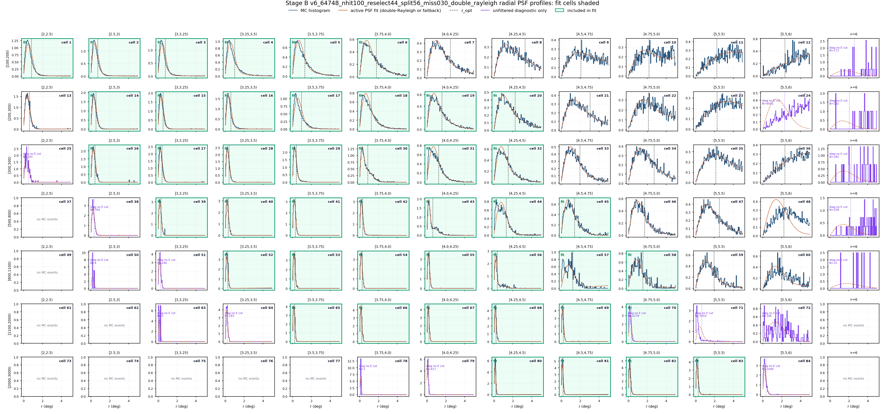

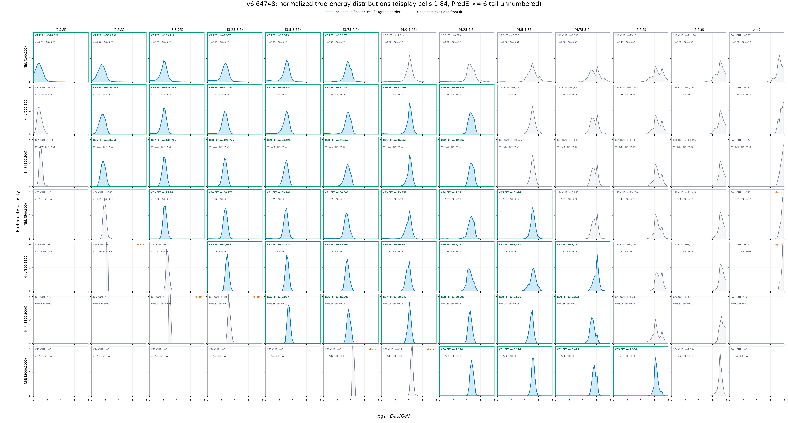
Stage D–E Diagnostics · 一月观测与背景
全部 91-cell 观测计数图来自已独立重数一致的一月缓存。背景/残差只展示固定 44-cell；其他格子留空。非必选 candidate 失败独立记录在 91-cell JSON。圆盘外不作非负认证。
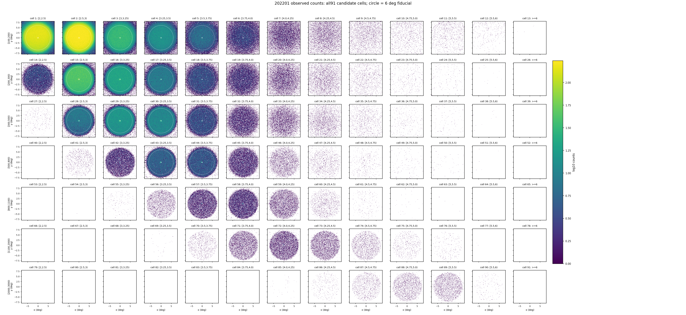
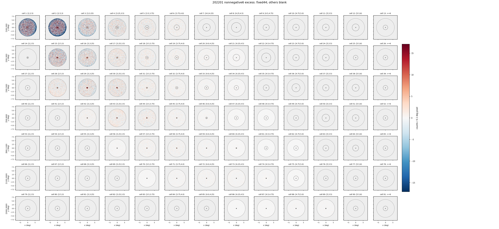

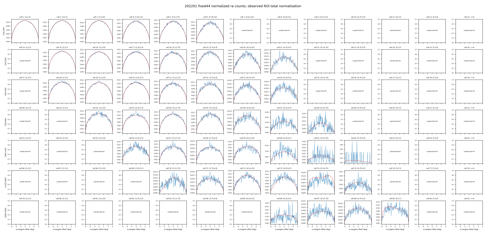

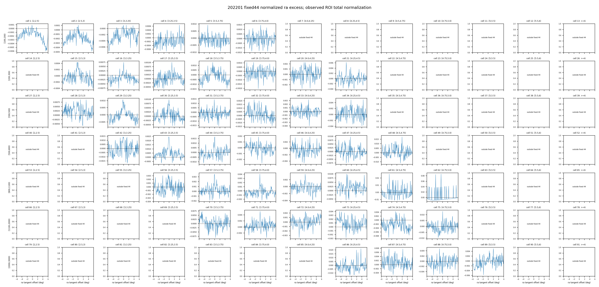

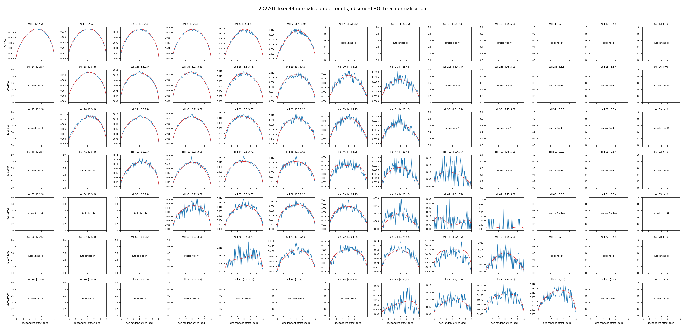

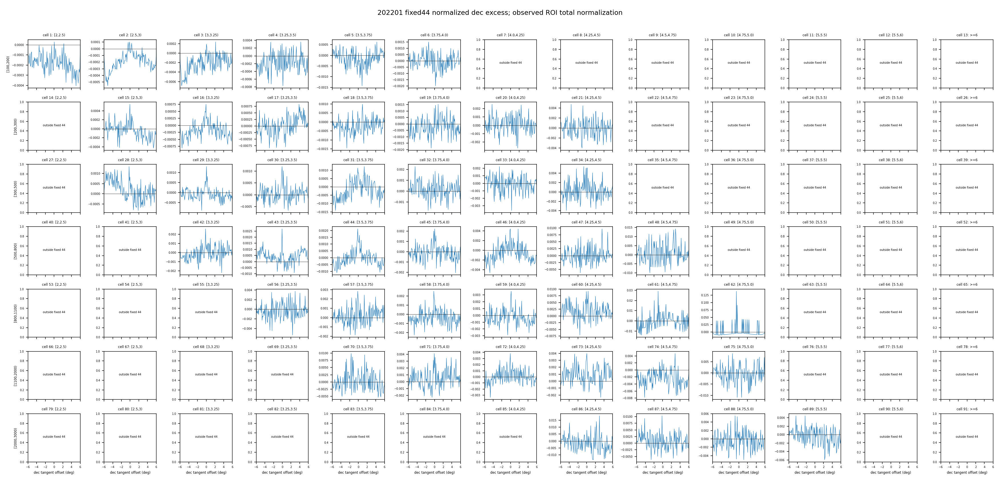
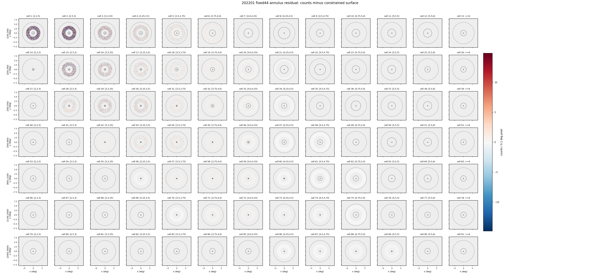

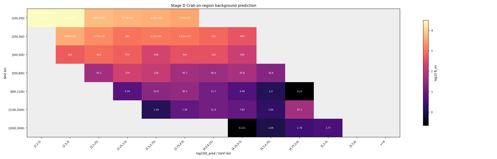

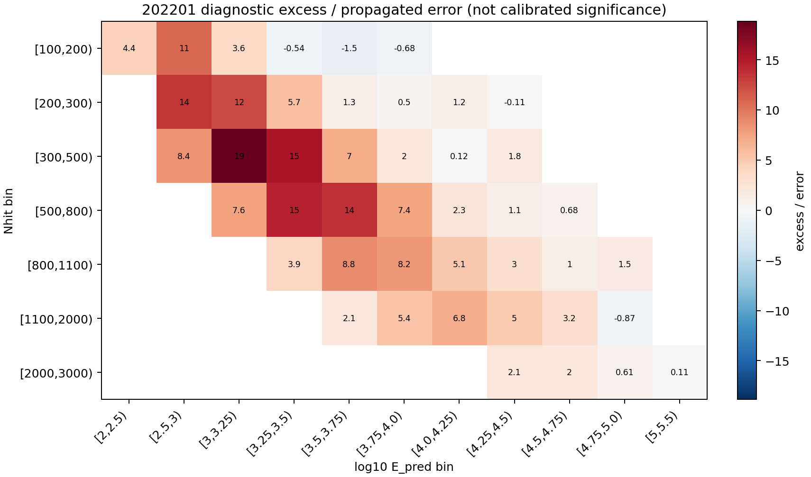
Stage E Signal · 44-cell 信号账本
负 excess cell 4、5、6、21、75 仍在拟合中。表中 σ²=N_on+Var_boot(B̂)，以 bootstrap 背景方差替换旧 B_on 项；没有将两项重复相加。
| Cell | Nhit | predE | N_on | B_on | Excess | σ propagated | LP pull | Constraint active |
|---|---|---|---|---|---|---|---|---|
| 1 | [100,200) | [2,2.5) | 31465 | 30514.133759 | 950.866241 | 216.070916 | -0.786847 | False |
| 2 | [100,200) | [2.5,3) | 31340 | 29056.117421 | 2283.882579 | 210.144859 | 0.674766 | False |
| 3 | [100,200) | [3,3.25) | 6213 | 5870.167640 | 342.832360 | 94.263150 | -0.029761 | False |
| 4 | [100,200) | [3.25,3.5) | 4677 | 4729.721010 | -52.721010 | 96.815271 | -1.999408 | False |
| 5 | [100,200) | [3.5,3.75) | 4065 | 4262.874764 | -197.874764 | 128.308856 | -2.172539 | False |
| 6 | [100,200) | [3.75,4.0) | 3257 | 3336.871623 | -79.871623 | 116.728269 | -1.062994 | False |
| 15 | [200,300) | [2.5,3) | 4887 | 3857.717207 | 1029.282793 | 76.063660 | -1.072100 | False |
| 16 | [200,300) | [3,3.25) | 2435 | 1767.919960 | 667.080040 | 53.905272 | 2.641915 | False |
| 17 | [200,300) | [3.25,3.5) | 1230 | 992.200684 | 237.799316 | 41.836866 | 1.726590 | False |
| 18 | [200,300) | [3.5,3.75) | 1182 | 1114.616606 | 67.383394 | 53.326525 | 0.046212 | False |
| 19 | [200,300) | [3.75,4.0) | 1049 | 1024.106921 | 24.893079 | 49.854101 | -0.266538 | False |
| 20 | [200,300) | [4.0,4.25) | 779 | 723.740036 | 55.259964 | 44.448699 | 0.819327 | False |
| 21 | [200,300) | [4.25,4.5) | 403 | 409.309487 | -6.309487 | 57.909588 | -0.246620 | False |
| 28 | [300,500) | [2.5,3) | 763 | 504.642625 | 258.357375 | 30.610204 | -2.718503 | False |
| 29 | [300,500) | [3,3.25) | 1611 | 819.023508 | 791.976492 | 42.013956 | 2.010553 | False |
| 30 | [300,500) | [3.25,3.5) | 1110 | 570.068339 | 539.931661 | 35.015025 | 1.678834 | False |
| 31 | [300,500) | [3.5,3.75) | 346 | 205.855063 | 140.144937 | 20.130403 | 0.599397 | False |
| 32 | [300,500) | [3.75,4.0) | 391 | 344.236126 | 46.763874 | 23.622486 | 0.355611 | False |
| 33 | [300,500) | [4.0,4.25) | 353 | 349.735543 | 3.264457 | 26.769805 | -0.585033 | False |
| 34 | [300,500) | [4.25,4.5) | 192 | 155.518986 | 36.481014 | 20.765423 | 1.358018 | False |
| 42 | [500,800) | [3,3.25) | 135 | 45.208328 | 89.791672 | 11.759889 | -0.467975 | False |
| 43 | [500,800) | [3.25,3.5) | 515 | 174.361662 | 340.638338 | 23.431766 | 0.018308 | False |
| 44 | [500,800) | [3.5,3.75) | 416 | 128.426316 | 287.573684 | 20.907241 | -0.751266 | False |
| 45 | [500,800) | [3.75,4.0) | 132 | 45.715681 | 86.284319 | 11.638244 | -0.074878 | False |
| 46 | [500,800) | [4.0,4.25) | 57 | 38.410830 | 18.589170 | 8.191671 | 0.469923 | False |
| 47 | [500,800) | [4.25,4.5) | 68 | 55.647801 | 12.352199 | 11.159874 | 0.718986 | False |
| 48 | [500,800) | [4.5,4.75) | 24 | 19.794517 | 4.205483 | 6.219302 | 0.399505 | True |
| 56 | [800,1100) | [3.25,3.5) | 25 | 5.340606 | 19.659394 | 5.027352 | -1.366887 | False |
| 57 | [800,1100) | [3.5,3.75) | 123 | 24.576813 | 98.423187 | 11.134759 | -0.268881 | False |
| 58 | [800,1100) | [3.75,4.0) | 121 | 30.264675 | 90.735325 | 11.078204 | -0.956098 | False |
| 59 | [800,1100) | [4.0,4.25) | 47 | 11.729820 | 35.270180 | 6.898858 | 1.227873 | False |
| 60 | [800,1100) | [4.25,4.5) | 17 | 4.460068 | 12.539932 | 4.147842 | 2.298084 | False |
| 61 | [800,1100) | [4.5,4.75) | 4 | 1.303104 | 2.696896 | 2.578993 | 0.871320 | False |
| 62 | [800,1100) | [4.75,5.0) | 3 | 0.229889 | 2.770111 | 1.828952 | 1.447994 | True |
| 70 | [1100,2000) | [3.5,3.75) | 7 | 1.335271 | 5.664729 | 2.651437 | -2.849679 | True |
| 71 | [1100,2000) | [3.75,4.0) | 43 | 7.359016 | 35.640984 | 6.575456 | -2.323036 | False |
| 72 | [1100,2000) | [4.0,4.25) | 68 | 11.891083 | 56.108917 | 8.266070 | 0.213402 | False |
| 73 | [1100,2000) | [4.25,4.5) | 39 | 7.652847 | 31.347153 | 6.262440 | 1.926921 | False |
| 74 | [1100,2000) | [4.5,4.75) | 14 | 1.836591 | 12.163409 | 3.754684 | 2.354475 | False |
| 75 | [1100,2000) | [4.75,5.0) | 38 | 47.150809 | -9.150809 | 10.557046 | -0.894534 | False |
| 86 | [2000,3000) | [4.25,4.5) | 5 | 0.220779 | 4.779221 | 2.236748 | 1.241746 | False |
| 87 | [2000,3000) | [4.5,4.75) | 6 | 1.037442 | 4.962558 | 2.453811 | 1.221757 | False |
| 88 | [2000,3000) | [4.75,5.0) | 4 | 2.755676 | 1.244324 | 2.025611 | 0.086151 | False |
| 89 | [2000,3000) | [5,5.5) | 4 | 3.766985 | 0.233015 | 2.045179 | -0.016372 | False |
Stage F Fit · 谱拟合
PL：φ(E)=φ₀(E/3 TeV)⁻ᵞ。LogPar：φ(E)=φ₀ exp[−α ln(E/3 TeV)−β ln²(E/3 TeV)]。φ₀ 单位 TeV⁻¹ cm⁻² s⁻¹；pivot 固定 3 TeV，自然对数。
legacy 指本次非负背景搭配旧误差 sqrt(N_on+B_on)，propagated 指 sqrt(N_on+Var_boot(B̂))。以下参数误差为条件统计误差，不含 MC、PSF、曝光及公共系统项。
| Error | Model | Parameters ± 1σ | Minuit valid | χ²/dof | Asymptotic p |
|---|---|---|---|---|---|
| legacy | pl | phi0=1.976799e-12 ± 5.733254e-14; gamma=2.623150 ± 0.024987 | True | 92.73411/42 | 1.084556e-05 |
| legacy | logpar | phi0=2.182967e-12 ± 7.993382e-14; alpha=2.733574 ± 0.049393; beta=0.122305 ± 0.036382 | True | 74.68332/41 | 0.001016 |
| propagated | pl | phi0=1.989591e-12 ± 5.109595e-14; gamma=2.619236 ± 0.021728 | True | 108.03650/42 | 9.973261e-08 |
| propagated | logpar | phi0=2.209892e-12 ± 7.101810e-14; alpha=2.742995 ± 0.045533; beta=0.134170 ± 0.033195 | True | 80.60968/41 | 2.178145e-04 |
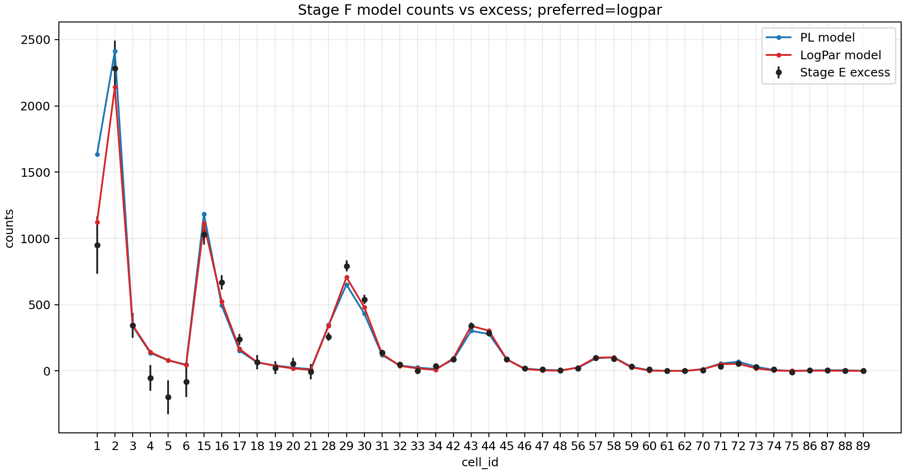
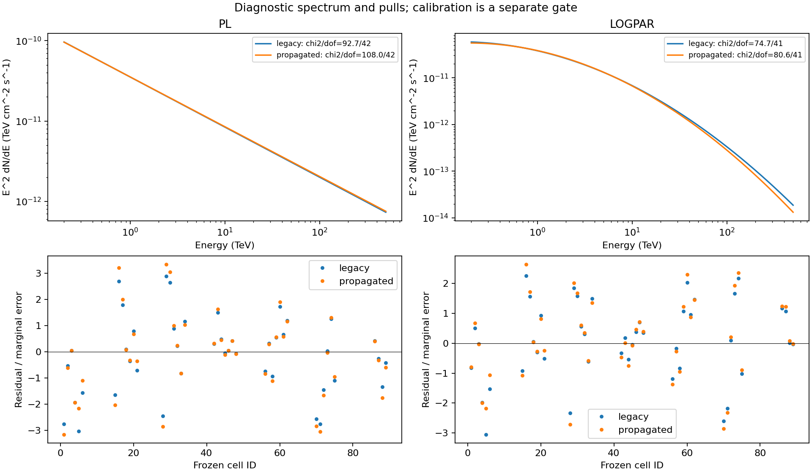
Stage G SED · 能谱点
固定 Stage F 优选 LogPar 谱形后，分组拟合单参数归一化；代表能量为模型加权真能量中位数。7 个 Nhit 点和 11 个 predE 点由同一 44-cell 产生，不能作为 18 个互相独立观测再拟合。
蓝色实线为本次 Stage F 传播误差版 LogPar 最佳拟合；浅蓝阴影按原 v6 的协方差传播定义重建。令 L=ln(E/3 TeV)，g=(ln 10, −L, −L²)，C 为拟合参数 (log₁₀φ₀, α, β) 的完整协方差，则 σ²_lnSED=gᵀCg，上下界为 SED×exp(±σ_lnSED)，保留参数间相关性。图中标为 conditional 1-sigma band：这是局部高斯近似下逐能量的名义 1σ 条件统计误差带，不是全能段联合置信带；未乘 χ²/dof 膨胀因子，也不含 MC、PSF、曝光等系统误差。本次覆盖率检验未通过，因此该带仅供诊断，不能视为已认证的 68% 覆盖区间。
外部参考点沿用归档 Pass5、HSC v0.99、WCDA-1、MAGIC、H.E.S.S.、HAWC。HSC 使用确认的 Official tutorial v0.99 WCDA 7 个点及其误差（橙色空心菱形）；HSC v0.99 数据 CSV。Pass5 的 7 个点不含可用误差列，因此不补造误差棒。Pass5 黑色实线与 HSC 橙色虚线均是在 log(dN/dE)–log(E/3 TeV) 空间对各自归档点做非加权二次拟合得到的 LogPar，仅用于视觉对照，非原流程的似然拟合结果。已移除 1LHAASO WCDA full-array PL 曲线。外部数据并非共同 GTI 或相同样本，没有根据外部曲线调整本次参数。

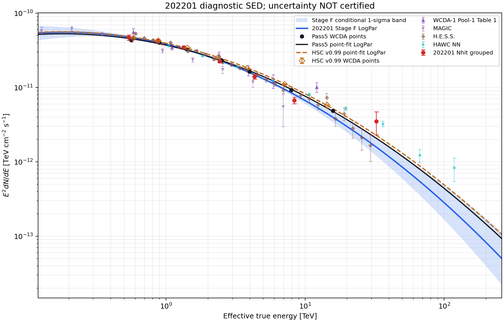

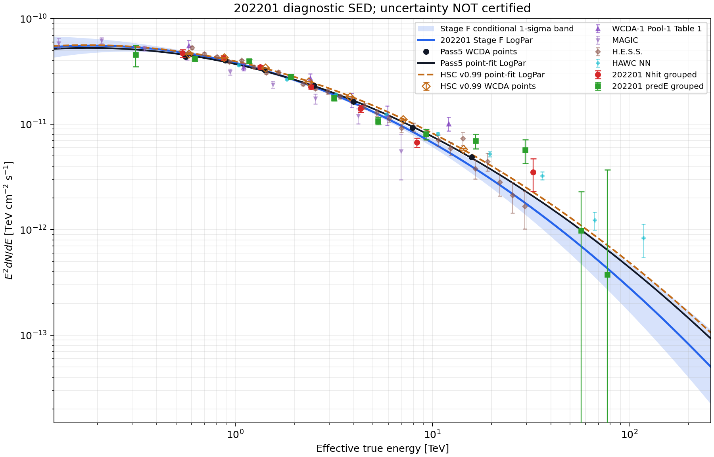

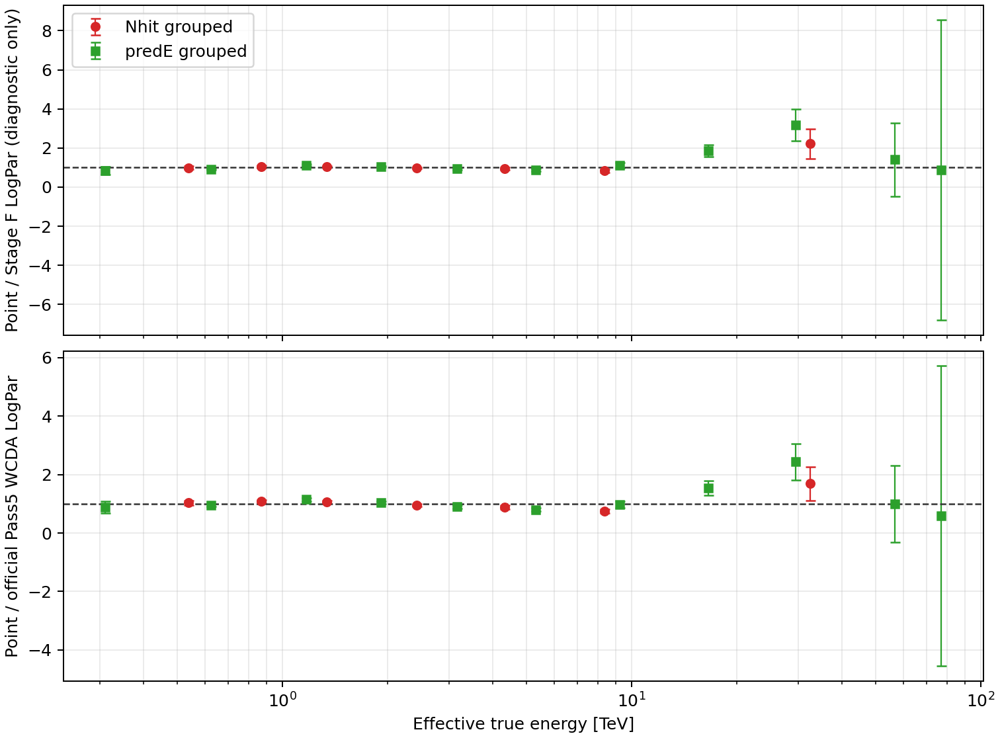

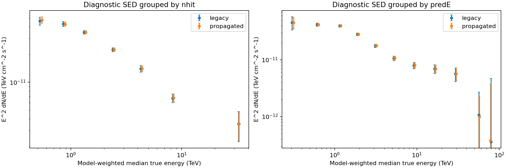
| Group | Bin | Cells | E50 [TeV] | E16–E84 [TeV] | E²dN/dE | Stat. error | χ²/dof |
|---|---|---|---|---|---|---|---|
| nhit | [100,200) | 6 | 0.538829 | 0.2636–1.125 | 4.730773e-11 | 3.956660e-12 | 10.896/5 |
| nhit | [200,300) | 7 | 0.871422 | 0.4763–1.672 | 4.271894e-11 | 2.248550e-12 | 11.023/6 |
| nhit | [300,500) | 7 | 1.338438 | 0.7669–2.374 | 3.480844e-11 | 1.311498e-12 | 15.413/6 |
| nhit | [500,800) | 7 | 2.423219 | 1.508–3.946 | 2.258323e-11 | 9.910198e-13 | 1.341/6 |
| nhit | [800,1100) | 7 | 4.328205 | 2.873–6.718 | 1.404681e-11 | 1.026307e-12 | 11.846/6 |
| nhit | [1100,2000) | 6 | 8.355476 | 5.38–14.14 | 6.740783e-12 | 6.863323e-13 | 19.860/5 |
| nhit | [2000,3000) | 4 | 32.475205 | 18.73–58.18 | 3.525622e-12 | 1.200756e-12 | 0.425/3 |
| predE | [2,2.5) | 1 | 0.311471 | 0.1776–0.5362 | 4.561524e-11 | 1.036542e-11 | 0.000/0 |
| predE | [2.5,3) | 3 | 0.624275 | 0.3691–0.9897 | 4.181106e-11 | 2.182716e-12 | 5.531/2 |
| predE | [3,3.25) | 4 | 1.174067 | 0.7901–1.715 | 3.980393e-11 | 1.659164e-12 | 4.467/3 |
| predE | [3.25,3.5) | 5 | 1.915911 | 1.3–2.77 | 2.823037e-11 | 1.280231e-12 | 10.764/4 |
| predE | [3.5,3.75) | 6 | 3.163581 | 2.126–4.595 | 1.778453e-11 | 1.006472e-12 | 12.098/5 |
| predE | [3.75,4.0) | 6 | 5.313921 | 3.468–7.722 | 1.077278e-11 | 8.735077e-13 | 3.967/5 |
| predE | [4.0,4.25) | 5 | 9.276539 | 6.267–13.54 | 8.055388e-12 | 9.185247e-13 | 2.011/4 |
| predE | [4.25,4.5) | 6 | 16.603720 | 11.04–24.06 | 6.978959e-12 | 1.128771e-12 | 4.858/5 |
| predE | [4.5,4.75) | 4 | 29.585693 | 19.54–43.85 | 5.702818e-12 | 1.453309e-12 | 0.737/3 |
| predE | [4.75,5.0) | 3 | 56.882191 | 40.04–78.89 | 9.876362e-13 | 1.312015e-12 | 2.856/2 |
| predE | [5,5.5) | 1 | 77.200210 | 0.3757–121.9 | 3.781627e-13 | 3.319138e-12 | 0.000/0 |
Uncertainty Calibration · 覆盖率与偏差
冻结设计：44-cell 各 512 次背景 bootstrap；4 类独立真值 × 两档环区计数，各 256 外层 × 128 内层。仅验证 cell 62 几何。失败保留在覆盖率分母，bias/RMSE 条件于有效估计。
2048 次外层点估计均成功；表中 failure 是内层 bootstrap 导致区间构造失败的外层试验比例。低统计 N_ann=10 的名义 95% 区间实际覆盖仅 53.5%–84.4%。
| Truth | N_ann | Relative bias | Interval failure | Cov 68% | Cov 95% | Gate |
|---|---|---|---|---|---|---|
| constant | 10 | -15.253% | 7.422% | 46.875% | 72.266% | FAIL |
| constant | 1000 | +0.442% | 0.000% | 64.453% | 94.531% | PASS |
| positive_tilt | 10 | -14.865% | 8.594% | 41.797% | 73.828% | FAIL |
| positive_tilt | 1000 | +0.477% | 0.000% | 68.359% | 96.094% | PASS |
| interior_zero | 10 | +343.272% | 12.109% | 66.406% | 84.375% | FAIL |
| interior_zero | 1000 | +76.182% | 0.000% | 68.359% | 93.359% | FAIL |
| boundary_zero | 10 | -39.992% | 10.547% | 32.812% | 53.516% | FAIL |
| boundary_zero | 1000 | -6.152% | 0.000% | 33.984% | 77.734% | FAIL |
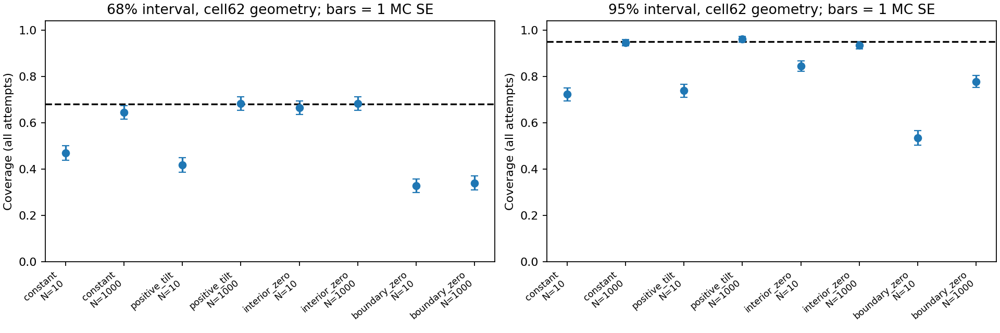
另有 PL / LogPar 各 256 次条件谱传播试验，背景方差固定于观测估计，不能认证全 44-cell 嵌套谱覆盖。
| Truth | Error | Parameter | Bias | RMSE | Coverage 95% |
|---|---|---|---|---|---|
| pl | legacy | phi0 | -3.015172e-14 | 7.115673e-14 | 92.578% |
| pl | legacy | gamma | 0.013244 | 0.030206 | 92.188% |
| pl | propagated | phi0 | -5.378445e-14 | 1.684932e-13 | 88.281% |
| pl | propagated | gamma | 0.023869 | 0.075025 | 84.766% |
| logpar | legacy | phi0 | -1.672372e-14 | 7.193356e-14 | 95.312% |
| logpar | legacy | alpha | 0.021427 | 0.046865 | 90.625% |
| logpar | legacy | beta | 0.013663 | 0.035281 | 91.406% |
| logpar | propagated | phi0 | -2.401639e-14 | 7.902653e-14 | 92.188% |
| logpar | propagated | alpha | 0.074140 | 0.177614 | 82.422% |
| logpar | propagated | beta | 0.049076 | 0.121691 | 82.031% |
Metadata Audit · 来源与复现
| Check | Evidence |
|---|---|
| 原交付产物 | 53 个文件 SHA256 一致 |
| 固定选择与顺序 | 背景/信号/两误差谱均 44-cell 对齐 |
| 残差一致性 | 两误差 × 两模型 Σpull² 与保存 χ² 一致 |
| SED 完整性 | 每个分组覆盖全部 44-cell，无丢失；7 + 11 点 |
| 科学标记 | DIAGNOSTIC_ONLY_UNCERTAINTY_NOT_CERTIFIED |
| 分析来源提交 | 8b425c9e2644a45e536e7af53d312efccb330a06 |
本页输入、图表与源码 SHA256 清单 · 冻结伪实验设计 · 原分析完成收据
本页只复用一月结果和制作诊断图，没有重新进行一月背景/谱优化、bootstrap、推理或时间对齐。Pass5 参考曲线由原 Stage G 辅助函数对归档点拟合，用于 SED 叠加图与比值图；HSC v0.99 由原报告辅助函数读取并做同样定义的点拟合，用于两张 SED 叠加图。原 v6 报告及原一月交付文件保持原状。
Final v6 Fit Parameters · 最终诊断参数
| Parameter | Value | Conditional 1σ |
|---|---|---|
| phi0 | 2.209892e-12 | 7.101810e-14 |
| alpha | 2.742995 | 0.045533 |
| beta | 0.134170 | 0.033195 |